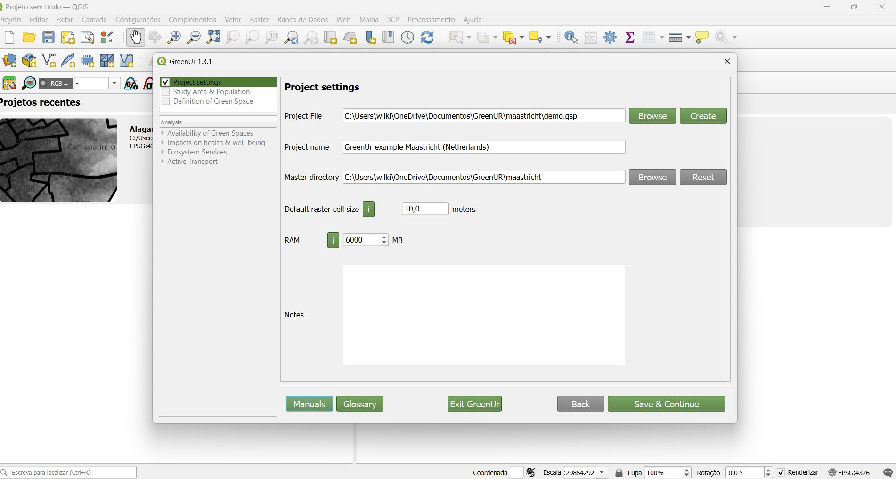
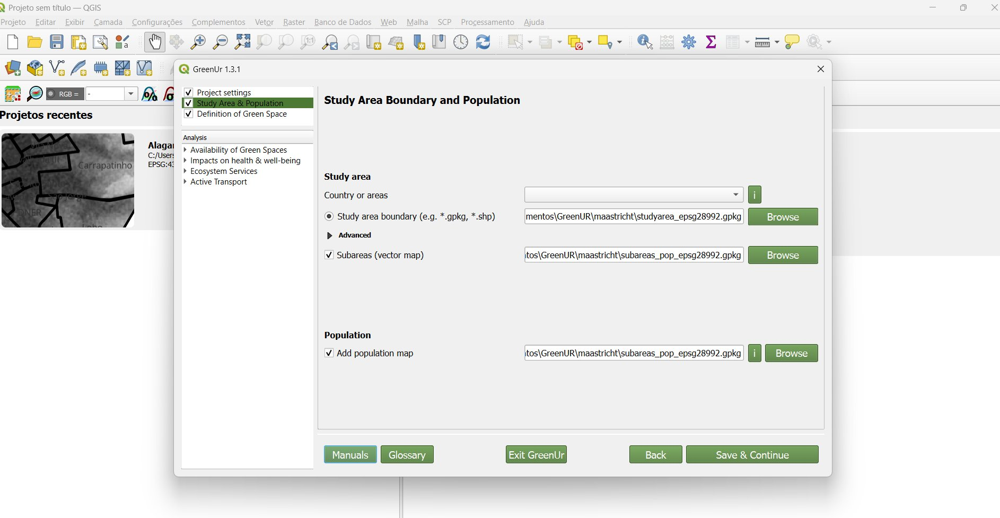
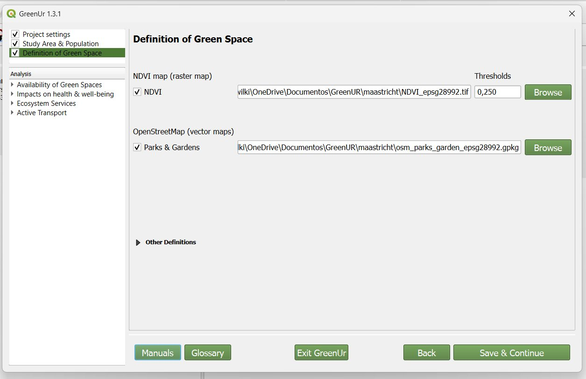
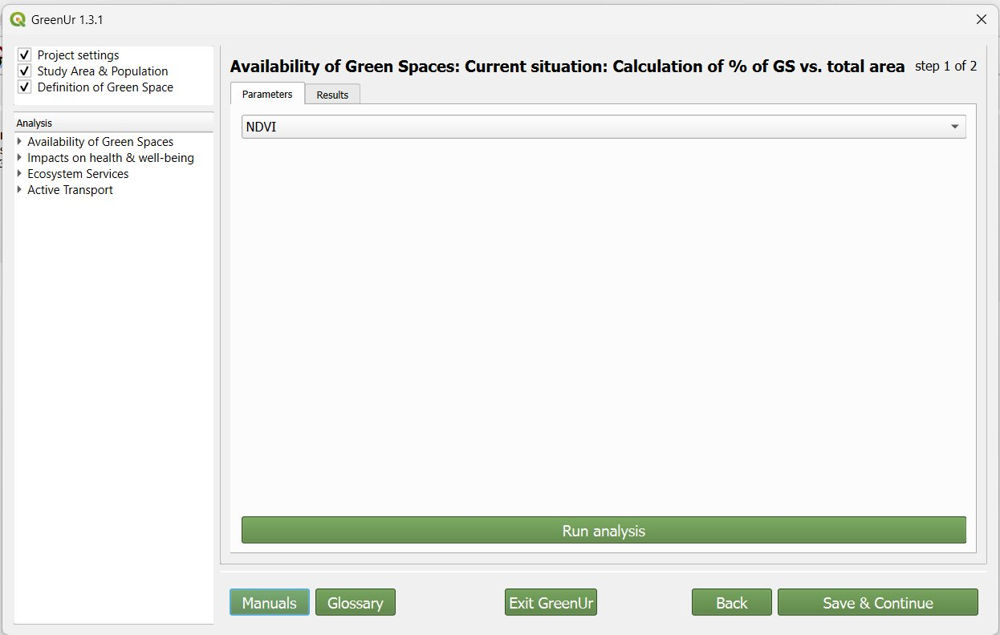
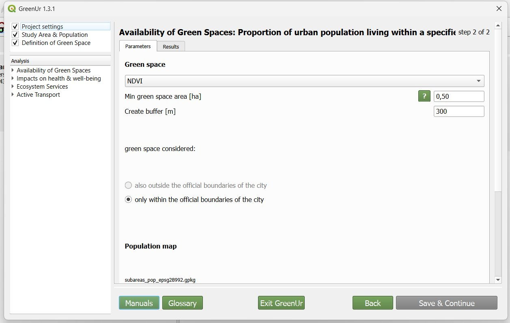
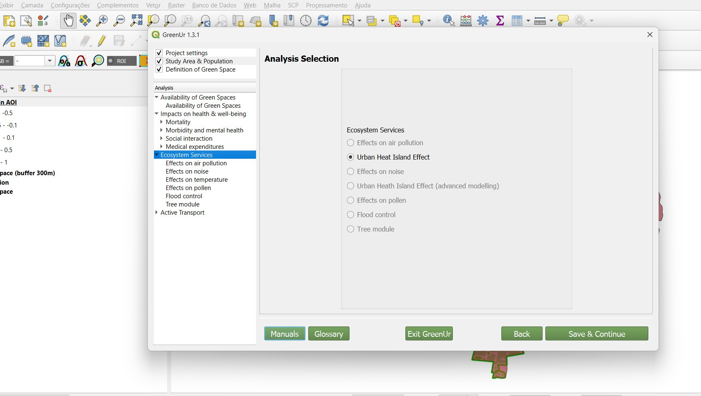
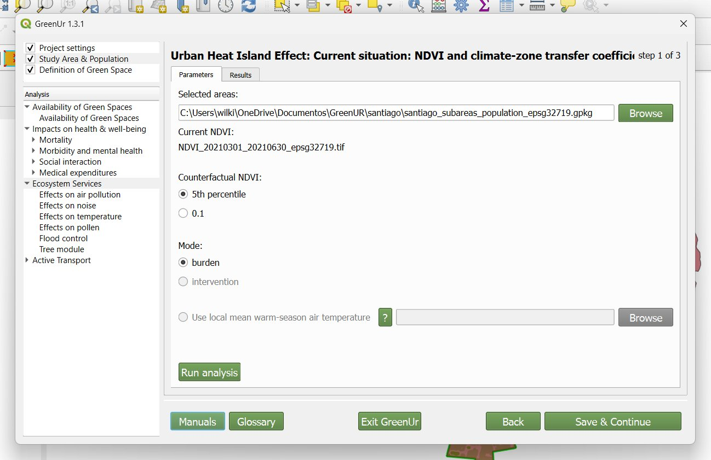
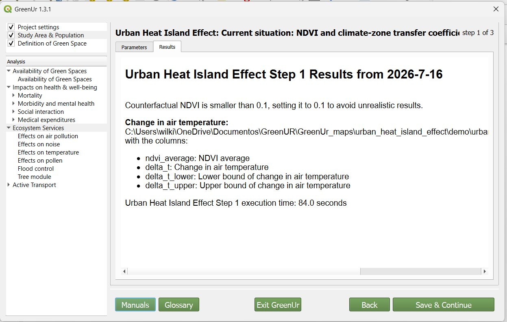

Ao abrir o GreenUr no QGIS, a primeira tela é Project settings. Nela se define o arquivo do projeto (Project File, com Browse ou Create), o nome do projeto (Project name) e o diretório principal (Master directory), onde os resultados serão gravados.
Ainda nesta tela ficam o tamanho padrão da célula do raster (Default raster cell size, no exemplo 10,0 metros) e a memória RAM alocada para o processamento (no exemplo 6000 MB). Os botões Manuals e Glossary dão acesso ao manual e ao glossário. Ao final, use Save & Continue.

Na tela Study Area Boundary and Population define-se a área de estudo. É possível escolher por país ou área (Country or areas) ou carregar um limite próprio em Study area boundary, aceitando arquivos vetoriais como .gpkg ou .shp (botão Browse).
A opção Subareas (vector map) permite carregar subdivisões internas da área. Em Population, a caixa Add population map carrega o mapa de população que será usado nos cálculos de acessibilidade. Save & Continue avança.

Na tela Definition of Green Space define-se como o espaço verde é identificado. A opção NDVI usa um raster de NDVI (NDVI map) com um limiar (Thresholds; no exemplo 0,250), acima do qual o pixel é considerado verde.
A opção Parks & Gardens, sob OpenStreetMap (vector maps), usa camadas vetoriais de parques e jardins. Há ainda Other Definitions para definições adicionais. Cada fonte é carregada pelo seu próprio Browse.

No grupo Availability of Green Spaces, a etapa 1 de 2 (Current situation: Calculation of % of GS vs. total area) calcula a proporção de área verde em relação à área total. Na aba Parameters, escolhe-se a definição de verde a usar (no exemplo, NDVI). O botão Run analysis executa; a aba Results mostra a saída.

A etapa 2 de 2 (Proportion of urban population living within a specified distance) calcula a proporção da população que vive a uma certa distância de uma área verde. Os parâmetros incluem a definição de verde (Green space), a área mínima de espaço verde (Min green space area, no exemplo 0,50 ha) e a distância de acesso (Create buffer, no exemplo 300 m).
Em green space considered, escolhe-se contar apenas o verde dentro dos limites oficiais da cidade (only within the official boundaries of the city) ou também fora (also outside). O mapa de população definido antes é usado aqui.

A árvore de análises à esquerda organiza os módulos do GreenUr: Availability of Green Spaces, Impacts on health & well-being (com Mortality, Morbidity and mental health, Social interaction, Medical expenditures), Ecosystem Services e Active Transport.
Na tela Analysis Selection, dentro de Ecosystem Services, escolhe-se o efeito a analisar: Effects on air pollution, Urban Heat Island Effect, Effects on noise, Effects on pollen, Flood control ou Tree module. No exemplo está selecionado Urban Heat Island Effect (efeito de ilha de calor urbana).

A análise Urban Heat Island Effect usa o NDVI atual (Current NDVI) e um NDVI contrafactual (Counterfactual NDVI), que pode ser o 5º percentil (5th percentile) ou o valor 0.1. O modo (Mode) pode ser burden (carga) ou intervention (intervenção). Há a opção de usar a temperatura média local do ar da estação quente (Use local mean warm-season air temperature).
Esta tela vem do projeto de exemplo de Santiago, com suas próprias camadas de subáreas e população. Run analysis executa a etapa.

Concluída a análise, a aba Results mostra o relatório da etapa. No exemplo, o GreenUr avisa que o NDVI contrafactual menor que 0.1 foi ajustado para 0.1 a fim de evitar resultados irreais, e informa a camada gerada de mudança de temperatura do ar (Change in air temperature) com as colunas ndvi_average, delta_t, delta_t_lower e delta_t_upper.
O rodapé traz o tempo de execução da etapa. Os arquivos de saída ficam no diretório do projeto definido no passo 1, prontos para serem abertos como camadas no QGIS.
